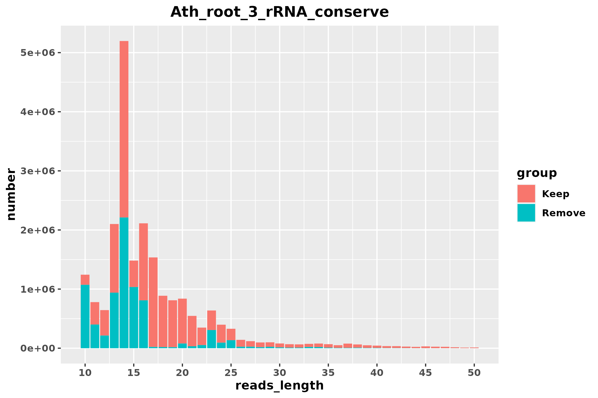
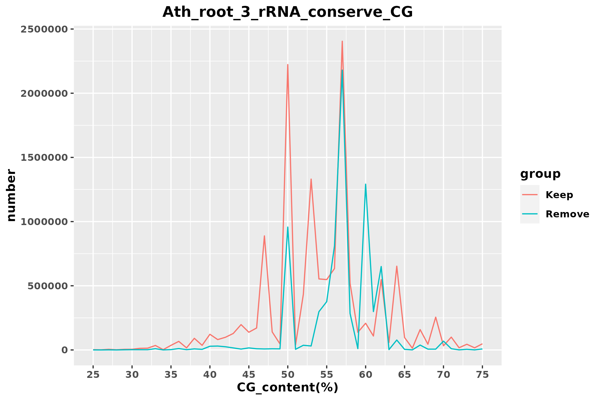
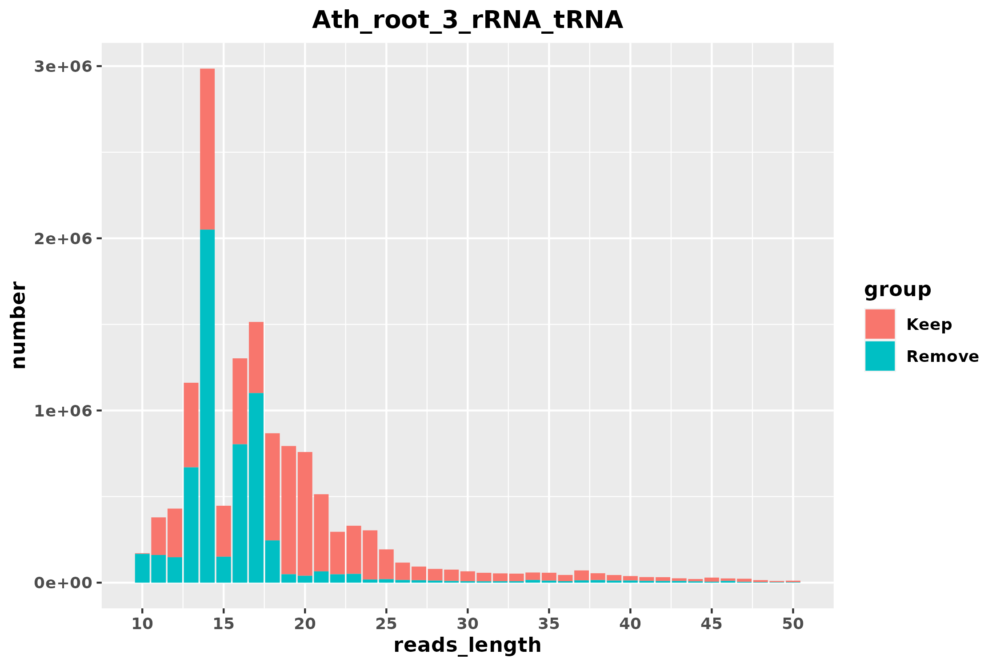
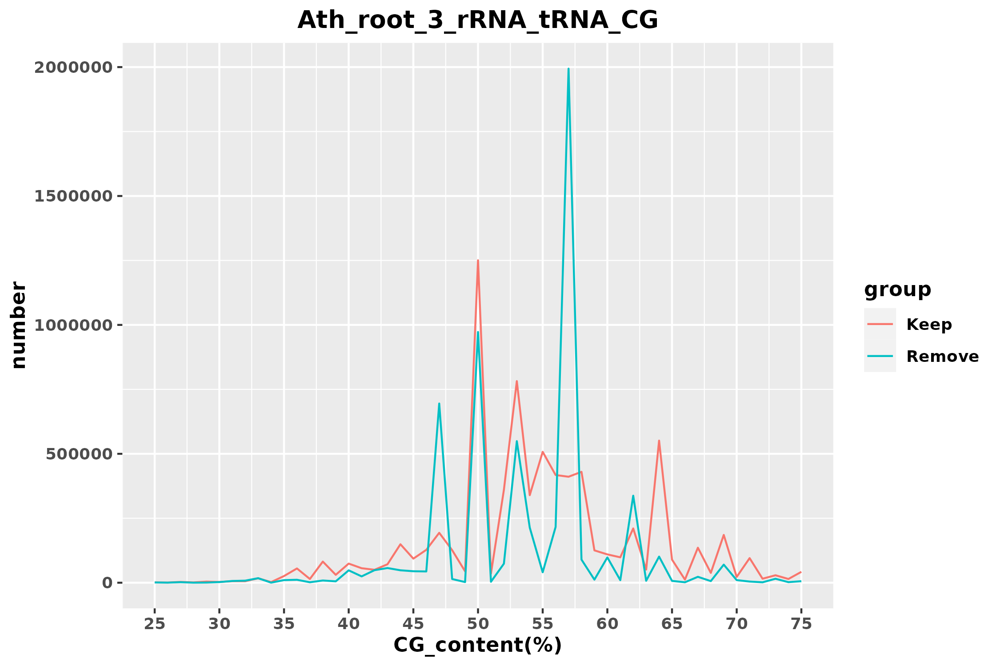
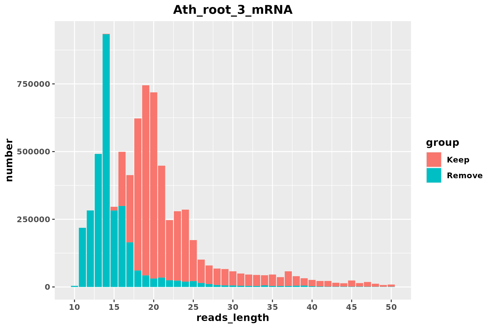
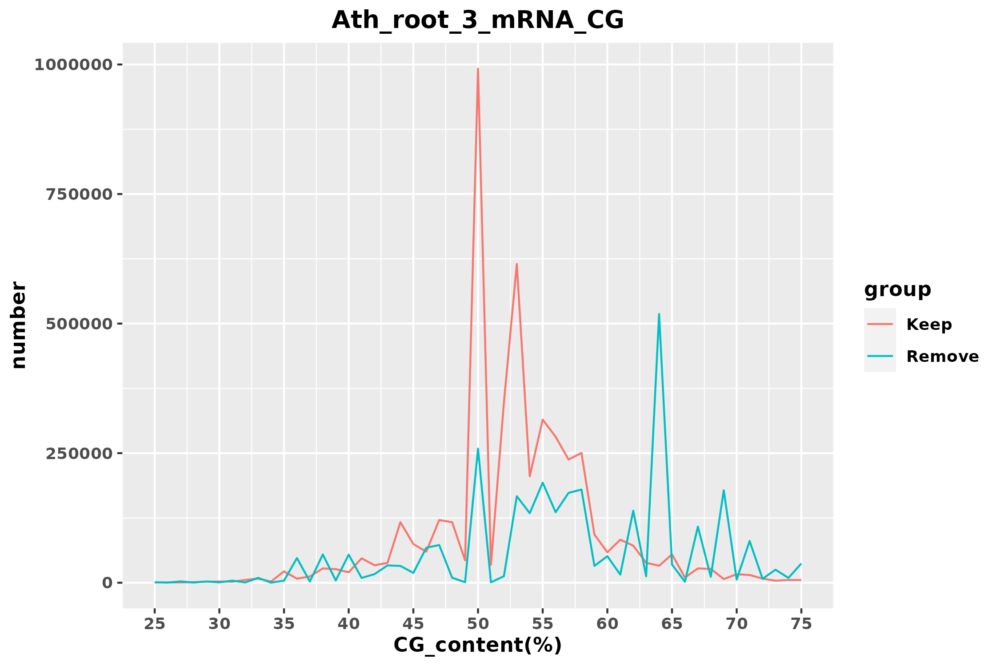

| Stage | reads | proportion | rRNA_align_rate | mRNA_align_rate |
|---|---|---|---|---|
| raw | 21383807 | 100.00% | 75.62% | 66.94% |
| Stage | reads | proportion | rRNA_align_rate | mRNA_align_rate |
|---|---|---|---|---|
| rRNA_conserve_keep | 13714052 | 64.13% | 69.92% | 55.51% |
| rRNA_conserve_remove | 7669755 | 35.87% | 85.82% | 87.38% |


| Stage | reads | proportion | rRNA_align_rate | mRNA_align_rate |
|---|---|---|---|---|
| rRNA_tRNA_keep | 7672122 | 35.88% | 61.28% | 44.07% |
| rRNA_tRNA_remove | 6041930 | 28.25% | 80.90% | 70.04% |
| Organism_name | name | Total_reads_number | Match_reads_number | Match_proportion | Bacteria_CG_content_rRNA_tRNA | Average_CG_content | Average_reads_Length |
|---|---|---|---|---|---|---|---|
| Actinomyces oris | Actinomy_oris_GCF_016127955_1 | 21383807 | 4680443 | 21.89% | 58.07% | 53.261% | 15.41 |
| Escherichia coli str. K-12 substr. MG1655 | Es_coli_K_12_MG1655 | 21383807 | 369668 | 1.73% | 53.23% | 58.325% | 20.79 |
| Escherichia fergusonii | Es_ferg_GCF_013892435_1 | 21383807 | 321964 | 1.51% | 54.98% | 60.313% | 19.79 |
| Streptococcus lutetiensis | Streptoc_lutet_GCF_900475675_1 | 21383807 | 316084 | 1.48% | 51.28% | 49.881% | 21.84 |
| Streptococcus infantarius | Streptoc_infa_GCF_016127275_1 | 21383807 | 316948 | 1.48% | 51.22% | 49.873% | 21.87 |
| Shigella sonnei | Shig_son_GCF_013374815_1 | 21383807 | 314278 | 1.47% | 54.98% | 59.786% | 18.94 |
| Shigella flexneri 2a str. 301 | Shig_flexn_2a_301 | 21383807 | 299464 | 1.40% | 54.79% | 60.282% | 18.01 |
| Serratia quinivorans | Ser_quini_GCF_900638135_1 | 21383807 | 298882 | 1.40% | 54.23% | 58.797% | 15.10 |
| Es_coli_O157_H7_Sakai | 21383807 | 293074 | 1.37% | 54.94% | 60.189% | 17.70 |


| Stage | reads | proportion | rRNA_align_rate | mRNA_align_rate |
|---|---|---|---|---|
| mRNA_keep | 4636694 | 21.68% | 61.24% | 19.26% |
| mRNA_remove | 3035428 | 14.19% | 61.33% | 81.98% |
| Organism_name | name | Total_reads_number | Match_reads_number | Match_proportion | Bacteria_CG_content_mRNA | Average_CG_content | Average_reads_Length |
|---|---|---|---|---|---|---|---|
| Mesorhizobium huakuii | Mesor_huak_GCF_014189455_1 | 21383807 | 5487803 | 25.66% | 63.26% | 56.313% | 12.93 |
| Pseudomonas plecoglossicida | Pseudom_plec_GCF_003391255_1 | 21383807 | 5453126 | 25.50% | 63.41% | 56.315% | 12.93 |
| Cellvibrio japonicus | Cellv_japonicus_GCF_008120875_1 | 21383807 | 4888951 | 22.86% | 52.62% | 57.157% | 14.06 |
| Lysinibacillus sphaericus | Lysi_sphaeri_GCF_020546525_1 | 21383807 | 4846726 | 22.67% | 37.71% | 55.941% | 12.57 |
| Acidipropionibacterium jensenii | Acidipr_jen_GCF_005890135_1 | 21383807 | 4730223 | 22.12% | 69.03% | 56.543% | 13.21 |
| Agrobacterium rhizogenes | Agr_rhizog_GCF_018138105_1 | 21383807 | 4719728 | 22.07% | 60.87% | 56.708% | 13.26 |
| Arachnia rubra | Ara_rubra_GCF_018128325_1 | 21383807 | 4440868 | 20.77% | 64.89% | 55.492% | 12.49 |
| Xanthomonas translucens pv. undulosa | Xa_transluce_pv_undulosa_GCF_017301775_1 | 21383807 | 4324406 | 20.22% | 68.32% | 55.321% | 12.54 |
| Desulfosarcina ovata subsp. sediminis | Desulfos_ovata_sediminis_GCF_009688985_1 | 21383807 | 4020668 | 18.80% | 54.83% | 55.348% | 12.59 |

